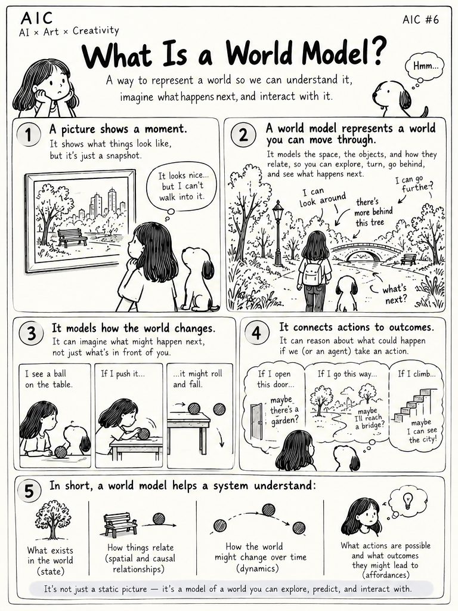
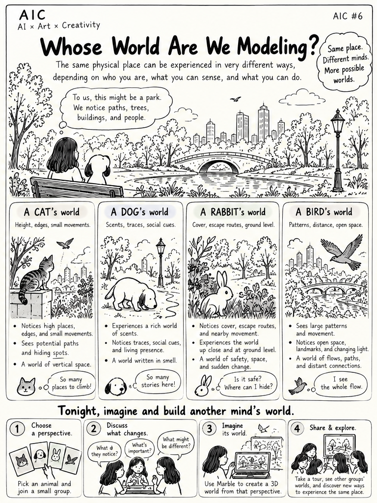
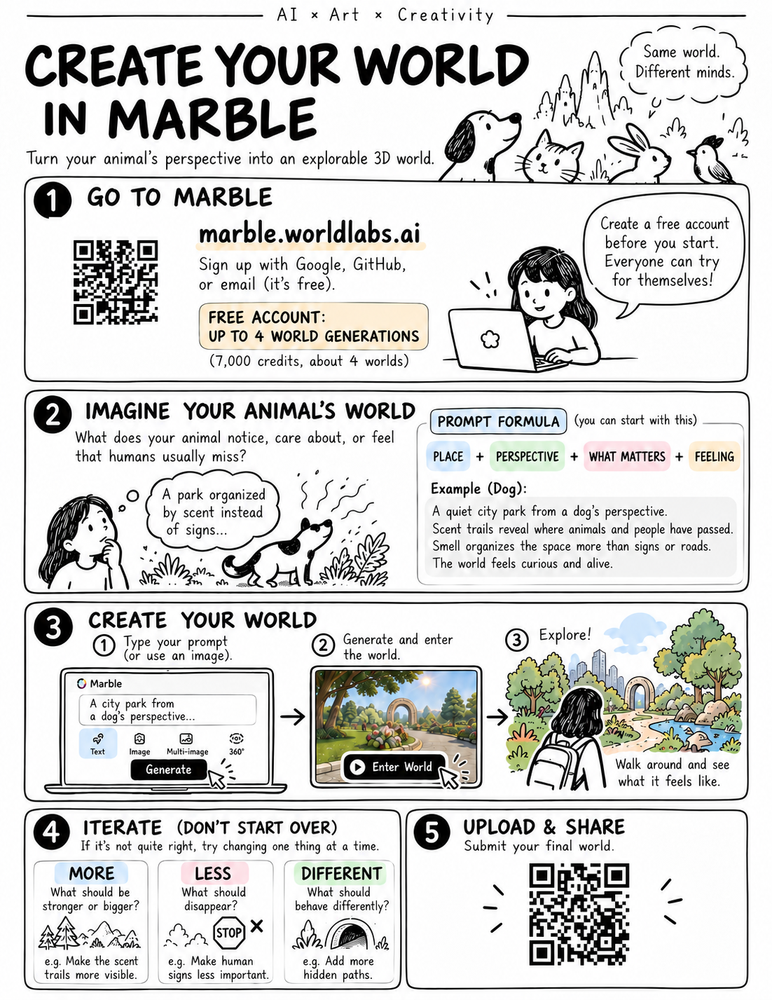

Illustrated Guide · AIC #6
Whose World Are We Modeling?
Three illustrated pages prepared for AIC #6, See the World Through Your Pet’s Eyes, on October 8, 2026. Begin with world models, imagine how another animal might experience the same place, then turn that perspective into an explorable 3D world.
Select any page to open it at full size.
What Is a World Model?

Whose World Are We Modeling?

Create Your World in Marble

Original workshop materials, October 2026. Marble’s interface and account allowances may change.